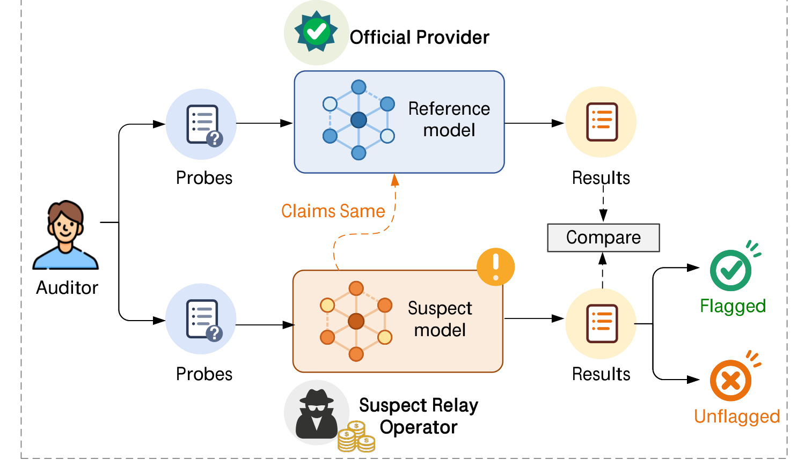
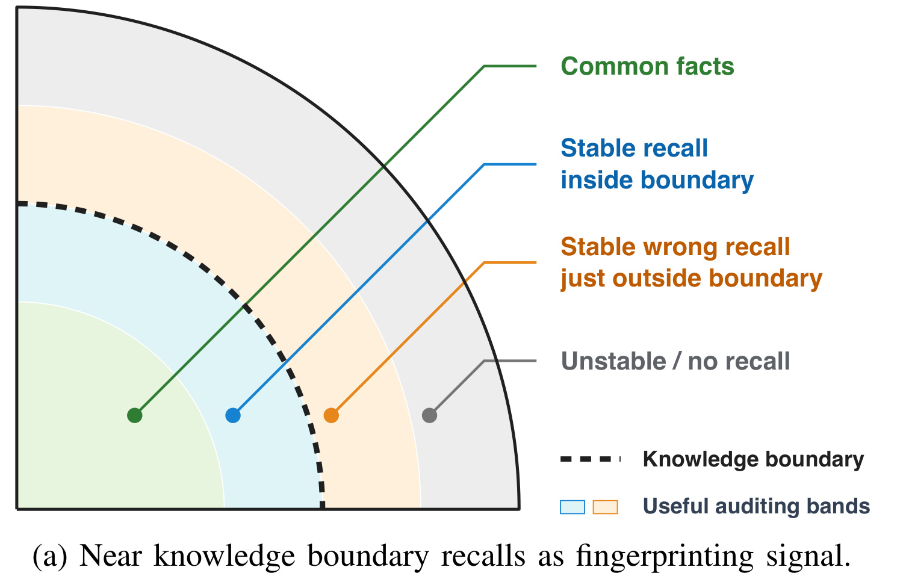
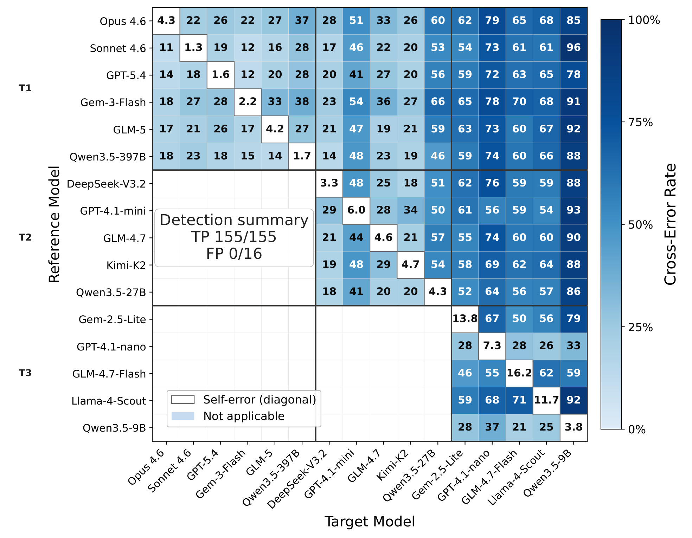
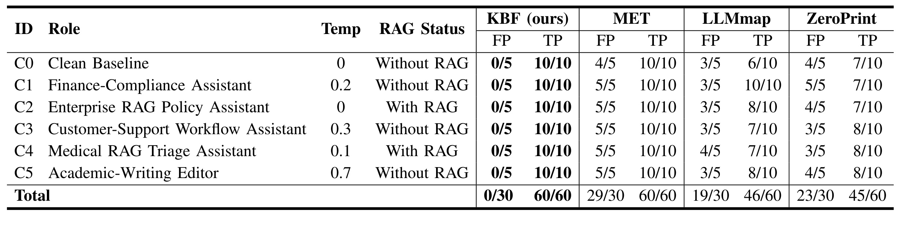
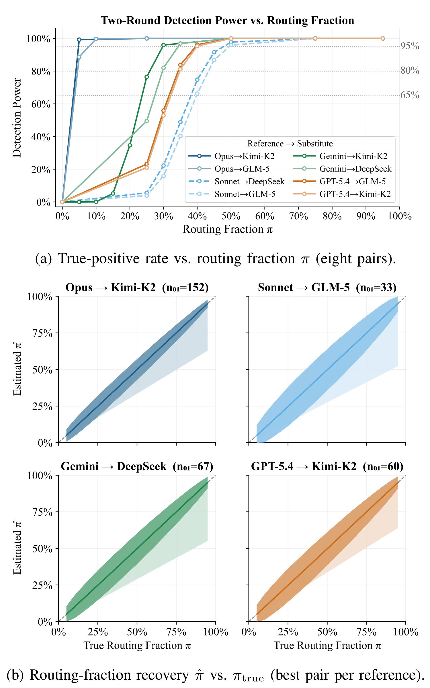
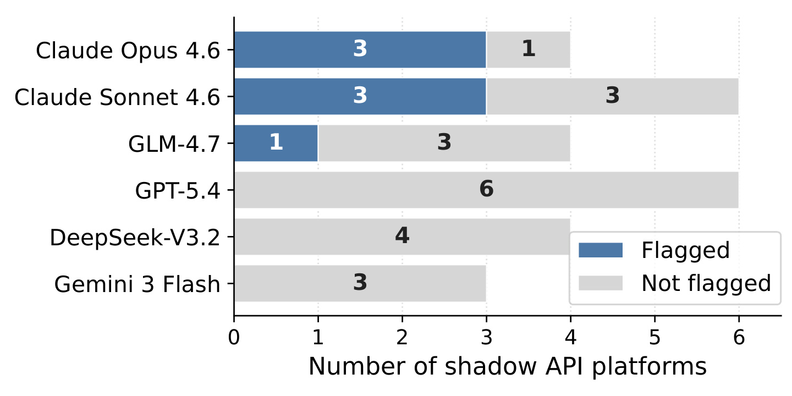
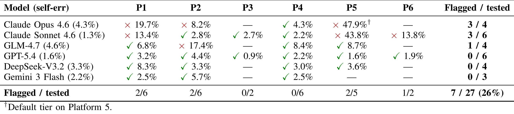

KBF: Knowledge Boundary as Fingerprint for Language Model and Black-Box API Auditing 讨论的是一个很现实的大模型供应链问题：用户通过 relay 或 reseller API 购买某个“声称的”模型端点时，黑盒用户几乎没有办法确认后端真的在服务广告里的模型。论文一作 Yijia Fang 来自 Beihang University，作者团队还包括 Xidian University 与 HKUST。论文入口：arXiv:2605.29524。代码/项目页已核验到 GitHub 仓库：https://github.com/Ooo0ption/KBF 。这篇文章的主贡献不是再做一个通用“模型识别器”，而是把问题收窄成 relay endpoint auditing：给定官方 reference API 和可疑 suspect API，普通用户只通过公开 API 请求，判断 suspect 是否与其声称的 reference endpoint 行为一致。
1. 背景和问题
大模型 API 的消费链路正在变长。很多用户不再直接向官方 provider 购买 Claude、GPT、Gemini、GLM、DeepSeek 等模型，而是通过聚合平台、转售平台、低价 shadow API 或兼容 OpenAI 接口的中间商使用模型。这种中间层确实有便利性：统一计费、多模型切换、低门槛接入、某些地区或账号限制下的可用性补充。但它也把“我请求的是哪个模型”这件事变成了信任假设。relay 对外宣称自己提供某个旗舰模型，实际可能全量替换成更便宜的模型，也可能只在一部分流量上替换，以降低成本并降低被用户发现的概率。
论文把这个问题称为 black-box relay auditing。审计者不是模型所有者，也不是服务平台内部工程师，不能读权重，不能拿 logits，不能看 provider routing log，不能要求 relay 给出 server-side 证明，也不能在训练阶段植入 watermark 或 trigger。审计者能做的只是向官方 reference endpoint 和 suspect endpoint 发送 prompt，拿到普通文本输出，然后用这些输出判断两者是否仍在同一个“端点行为分布”内。这里的“同一个”不是逐 token 完全相等，因为生产 API 本来就有随机采样、系统 prompt、temperature、RAG wrapper、provider 量化和服务实现差异；论文要检验的是 suspect 的偏离是否超过 reference 自身在可接受部署变化下的自噪声。

Figure 1 把威胁模型画得很清楚：审计者同时向官方 reference model 和 suspect model 发送 probes；官方 provider 是可信锚点，suspect relay operator 控制自己的后端路径；审计者只比较两边结果，最终给出 flagged 或 unflagged。这个图的重要点在于它没有假设 relay 是合作方，也没有假设 reference 和 suspect 暴露 token probability。KBF 的输入输出都被设计在普通用户能做到的范围内，因此它比很多模型 provenance 或 watermark 方法更贴近“第三方买家如何自查”的场景。
已有方法为什么不够？第一类是自我身份询问，比如让模型回答“你是谁”。这在安全上很弱，因为模型经常在正常情况下误报身份，relay 也很容易用系统 prompt 改写。第二类是手工 tricky prompt 或 prompt injection 风格挑战，它们容易成为公开固定题库，一旦 relay 识别出挑战就可以 special-case。第三类是通用输出分布测试，如 MET、ZeroPrint、LLMmap 一类方法，它们能从多次输出中抽取 fingerprint，但容易受到 wrapper、系统提示词、temperature、embedding 模型或固定阈值的影响。第四类是完整 benchmark evaluation，它们可以直觉上判断模型能力，但成本高、慢，而且 benchmark 能力差异并不等价于 endpoint 一致性。
KBF 的目标因此有四个约束。第一，discriminative：能区分有经济动机的替换，尤其是昂贵模型被便宜模型替代、同家族降级或同价位替换。第二，robust：同一个 reference endpoint 在 role prompt、RAG、temperature 或 provider 包装下不应被误判。第三，benign：probe 应该像普通事实查询，不依赖危险 prompt、注入攻击或显眼触发器。第四，economic practicality：在线审计要便宜，probe 要可更新，让 relay 针对题库做规避的成本接近或超过诚实服务的成本。
这篇论文最有意思的地方，是它没有把“模型答得对不对”作为核心，而是把“模型在知识边界附近稳定地答出什么数值”作为指纹。一个模型在常识事实上和其他模型都一致，区分度很低；在太冷门的事实上自己也不稳定，假阳性风险高；最可用的区间位于两者之间：reference endpoint 会反复给出一个具体数值，其他 endpoint 则给出不同数值、无效答案或不稳定答案。更进一步，reference 稳定给出错误数值也可以成为 fingerprint，因为审计不是事实评分，而是端点一致性测试。这个转向使 KBF 避免了“更聪明的替代模型偶尔答得更对，所以 benchmark 反而误导”的问题。
2. 方法
2.1 黑盒审计的形式化定义
论文先把 reference 与 suspect 抽象成两个随机 oracle：
符号解释：$x$ 是用户查询，$c \in C$ 是请求配置，例如 system prompt、temperature、decoding 参数、最大输出长度或 provider routing 选项；$O_{\mathrm{ref}}$ 是官方 reference endpoint，$O_{\mathrm{sus}}$ 是 suspect relay endpoint。两个 oracle 都可能随机，因为生产服务存在 sampling、batch serving、非确定推理、量化或 wrapper。这个定义刻意把配置 $c$ 放进输入，是为了让审计不只在 bare API 上成立，也能覆盖实际应用中常见的 role prompt、RAG assistant 或 agent CLI 场景。
审计假设写成：
符号解释：$H_0$ 表示 suspect 与 reference 在被审计行为上仍然一致；$H_1$ 表示 suspect 已经偏离 reference。这里的 $\approx$ 不是数学上的完全相等，而是 operational equivalence：suspect 的表现必须落在 reference 自身测得的 self-variation 范围内。这个定义决定了 KBF 是 precision-first 的统计测试，宁愿把证据不足的 endpoint 保留为 SAME，也不应轻易误伤诚实平台。
论文重点研究两类偏离。全量替换写成：
混合路由写成：
符号解释：$O_{\mathrm{sub}}$ 是替代后端，$\alpha$ 是替换比例。全量替换对应 relay 永远把请求发到便宜模型；混合路由对应 relay 只替换一部分流量，例如 5%、10% 或 50%。混合路由更难，因为单次请求可能刚好被路由到 reference，用户直觉上很难发现。KBF 后面专门设计 two-round protocol 来检测这种分布层面的偏离。
评估指标是 false-positive rate 与 true-positive rate：
符号解释：FPR 是 honest endpoint 被误判 DIFFERENT 的概率，TPR 是替换或混合路由被检出的概率。论文强调 FPR 是首要安全指标，因为审计结论可能影响平台声誉；TPR 则衡量它对经济性替换的检测能力。对混合路由，TPR 还依赖 $\alpha$ 和 substitute 与 reference 在 probe 上的差异程度。
2.2 知识边界数值召回为什么能做指纹
KBF 的核心观察是 knowledge boundary。常见事实如“水的沸点”对强模型没有区分度，因为大家都知道；极冷门事实也不好，因为 reference 自己可能时而猜一个数，时而拒答，时而输出区间。位于中间的事实更有用：reference 在多次请求下稳定给出一个可解析数值，而 substitute 无法稳定复现这个数值。这里的“数值”很关键，因为它降低了文本比较的歧义。KBF 不需要 sentence embedding 判断语义相似，也不需要人工读长回答，只需要解析数值并按 domain-specific tolerance 比较。

Figure 2a 给出直觉：最靠里的 common facts 区域太容易，稳定但不区分；最外侧 unstable/no recall 区域太难，reference 自身不可靠；蓝色和橙色带才是可用审计区间，分别对应边界内稳定正确召回和边界外稳定错误召回。论文原图右侧还给出 GPT-5.4 的筛选 probe 示例：有些是稳定且事实正确的数值，如 phosphorus oxychloride 的沸点、Myrmecia croslandi 的染色体数、Threefish-1024 的轮数；有些是稳定但事实错误的数值，如小行星半长轴或 Stirling number。这里为了避免把大段 probe 文本截图误判为正文，只保留概念面板，具体例子在文字中解释。KBF 都保留这些稳定值，因为审计目标是“suspect 是否复现 claimed endpoint 的边界行为”，不是“谁更接近真实世界”。如果 suspect 给出了 ground truth，但 reference 一直稳定给错，它在 KBF 语义下仍然是 mismatch。
KBF enrollment 存储的 reference fingerprint 可以写成：
符号解释：$q_i$ 是短数值审计 prompt，$d_i$ 是知识域，$a_i$ 是 reference endpoint 的稳定 consensus completion，$\mathrm{match}_{d_i}$ 是该域的比较规则。不同域的匹配规则不同：整数型事实可以要求四舍五入后完全一致，化学沸点可以允许绝对误差，天文量可以允许相对误差。把 match rule 和 domain 绑定，能避免“一刀切字符串相等”导致的格式误差，也能避免 tolerance 过宽削弱指纹。
这里的工程设计有两个隐含优势。第一，probe 看起来像普通事实填空，relay 很难只凭 prompt 外观判断它是审计题；第二，probe 可以不断重新生成，不依赖固定公开题库。论文也承认 KBF 不提供密码学安全：如果 relay 完美识别所有私有 probes，并且每次都把这些 probes 转发给 official reference，它可以规避。但这会把规避成本推高到接近诚实服务，而比公开 benchmark 或固定 trigger 更难低成本 special-case。
2.3 三阶段 probe 构造：生成、稳定性过滤、对比筛选
KBF 的离线 enrollment 目标是为每个 claimed reference endpoint 构造一组 compact probe。第一阶段是 adaptive frontier search。对每个 numerical domain，系统用 domain-specific theme 和 difficulty tier 让 reference model 提出 candidate name/value records。tier 会逐轮向更 obscure、更 specialist-only 的事实移动。这个过程不是随机抓百科题，而是沿着 reference 的知识边界向外探索：如果太容易，就继续提高难度；如果太难导致稳定候选数下降，就停止或回退。
第二阶段是 configuration-stability filtering。每个 candidate 会被改写成短审计格式，再在多个 reference configurations 下重复查询。只有 reference 在这些配置中稳定输出同一可解析数值，candidate 才能进入 fingerprint。这个阶段解决的是“自噪声”问题：如果一个问题本身让 reference 在 temperature、role prompt 或 wrapper 下摇摆，那么 suspect 与 reference 的差异就很难解释，容易产生 false positive。KBF 先删掉这种不稳定 probe，而不是在在线审计阶段再补救。
第三阶段是 optional contrastive screening。对于稳定但过于普通的 candidate，便宜模型也可能同样答对，保留它们只会增加成本而不增加区分度。KBF 因此可以用一个更小或更便宜的 contrast model，例如 Qwen3.5-9B，对 reference-stable candidates 做筛选：如果 contrast model 与 reference 一致，则这个 probe 对“便宜替换”区分度弱，可以丢弃；如果 contrast model 不一致，则保留。这个阶段让最终 probe set 更贴近经济替换场景，而不是只追求 reference 自身稳定。
在线审计时，suspect endpoint 对每个 probe 的回答被解析成数值 $y_i$，再生成 mismatch indicator：
符号解释：$m_i=1$ 表示 suspect 在第 $i$ 个 probe 上没有匹配 reference consensus，$m_i=0$ 表示匹配。这里的 $\neg \mathrm{match}$ 包括数值差异、无效输出、无法解析或超出该 domain tolerance。所有 probe 的 mismatch count 为：
符号解释：$M$ 是 suspect 在整套 reference probe 上的总偏离数。KBF 再用 reference self-error 估计 null 下的自然 mismatch 概率 $p_0$，做 binomial tail test：
符号解释：$\mathrm{Bin}(n,p_0)$ 是 $H_0$ 下 n 个 probe 的自噪声 mismatch 分布，$\alpha$ 是显著性阈值。若观察到的 $M$ 落在 reference 自身噪声极不可能达到的尾部，KBF 才拒绝 $H_0$ 并标记 DIFFERENT。论文使用 99% Clopper-Pearson null bound 来保持保守性，这也是它在同模型控制组中没有 false alarm 的关键。
2.4 请求侧约束和协议可复现性
KBF 尽量把 prompt 做短，而不是依赖复杂系统提示。附录记录了固定 system prompt：要求模型严格遵循用户指令，只输出请求内容；recall user prompt 要求模型用权重中首先想起的值填空，不要二次修正，不要使用外部上下文。标准 audit 指令可以简化成“Fill in the blank. Output only the number.”。这种设计的好处是输出容易解析，且少引入额外行为风格差异。
论文附录的 Table 10 展示请求侧设置：candidate generation 使用 reference model、temperature 0.0；stability verification 同一个 reference model 在 $t_0=0.0$、$t^a_{0.7}=0.7$、$t^b_{0.7}=0.7$ 下重复；contrastive screening 用 Qwen3.5-9B、temperature 0.0；single audit 对 target endpoint 使用 temperature 0.0。这个表说明 KBF 的稳定性不是口头要求，而是把温度变化显式放进 enrollment 过滤。在线阶段再回到 temperature 0.0，是为了降低 suspect 响应随机性，让 mismatch 更可解释。
注意 KBF fingerprint 的对象是“API endpoint”，不一定是裸权重。如果官方 reference endpoint 本来带 retrieval、tools、provider wrapper，那么这些行为就是 reference 的一部分；如果 suspect secretly 加了 retrieval 或外部数据库来回答知识题，它也不再是同一个 endpoint。论文不试图区分 parametric memory 与 retrieval，因为纯黑盒设置下无法可靠拆分。这个选择使结论更贴近用户关心的问题：我购买的服务行为是否与官方参考端点一致，而不是后端权重是否逐 bit 相同。
从实现角度看，candidate parsing 也是 KBF 能稳定落地的一环。候选生成要求 reference 输出 name | value 结构，解析器会去掉列表符号、单位符号、Unicode minus、逗号和多余格式，再把数值标准化。去重不只按 prompt 字符串，还要按实体名、domain 和数值范围处理，避免同一事实在不同措辞下重复进入 probe set。对 audit prompt 的渲染，论文偏好填空式短句，例如“某化学物在 1 atm 下的沸点是 ___ 摄氏度”，因为这种形式让数值槽位明确，也让输出解析不依赖长文本语义。
另一个容易被忽略的点是 domain tolerance 与安全阈值之间的分工。domain tolerance 解决单个 probe 的数值比较，比如天文量允许相对误差、化学量允许绝对误差；binomial threshold 解决整套 probe 的统计判断，避免因为一两个边界题的随机波动就指控 relay。KBF 因此不是把每个 mismatch 都当作欺诈证据，而是先承认 reference endpoint 本身会有 self-error，再问 suspect 的 mismatch 是否显著超过这个 self-error。这个双层校准是它比手工 tricky question 更可信的地方。
2.5 混合路由的 two-round 扩展
全量替换相对容易，混合路由更贴近真实欺诈策略。relay 可以让大部分流量走 reference，只把少量请求转给便宜 substitute。KBF 的检测能力取决于 reference 与 substitute 在 probe 集上的可分离部分。论文用 $n_{01}$ 描述最有信息量的 probes：reference 保持正确或一致，而 substitute mismatch 的 probe 数。直觉上，$n_{01}$ 越大，即便 $\alpha$ 很小，也会在总 mismatch count 中留下可检测偏移；$n_{01}$ 很小，说明 substitute 与 reference 在这套 probe 上太像，需要更高路由比例才能检出。
路由比例的估计可以粗略理解为：
符号解释：$M_{01}$ 是落在 reference-consistent/substitute-mismatch probe 子集上的可疑 mismatch 数，$n_{01}$ 是该子集规模。真实论文实现使用 two-round protocol 和候选 substitute pool 处理未知 substitute，但这个近似公式能说明为什么 $n_{01}$ 是关键。若 Opus 与 Kimi-K2 在 152 个 probe 上形成清晰 0/1 差异，那么 5% 到 10% 的替换就能累积出足够信号；若 Sonnet 与 GLM-5 只有 33 个这种 probe，50% 的替换才更容易稳定检出。
2.6 方法边界
KBF 不是通用模型归因器，也不是法律意义上的欺诈证明。它只证明 suspect endpoint 的数值边界召回行为与 claimed reference endpoint 在统计上不一致。一个 flagged 结果需要后续调查：可能是 relay 替换模型，也可能是 hidden system prompt、RAG、provider routing、量化、版本漂移或平台配置错误。论文也明确说公开 probe set 适合复现和方法比较，真正 operational audit 应为具体 reference model version 生成新的私有 probes。这个边界很重要，因为它避免把统计 triage 过度解释成 provider intent。
3. 实验结果
3.1 16 个生产端点上的主检测结果
主实验使用 OpenRouter 上 16 个 production LLM endpoints，覆盖 8 个主流模型家族和三档价格。reference probes 来自 provider-pinned endpoints。论文把经济相关替换定义为更贵或更强的 reference 被更便宜、同价或更弱的 target 替代；upgrade 方向不算威胁模型，因此 heatmap 中留空。主结论很强：KBF 检出全部 155 个 economically relevant substitutions，同时在 16 个 same-reference controls 上没有误报。

Figure 3 的读法是行表示 reference model，列表示 target model，颜色是 target 在 reference probe set 上的 cross-error rate。对角线是 self-error，白色或浅色代表同端点自噪声；有颜色的经济替换区域都被检出。图中摘要写出 TP 155/155、FP 0/16，说明 KBF 在这个受控池里既有高检测力，又没有把 reference 自己误判为不同。更细看会发现，同家族替换也能被检出，例如 Claude Opus 4.6 与 Claude Sonnet 4.6 的双向替换；跨家族替换更明显；同价位最难案例 GPT-5.4 与 Gemini 3 Flash 也被拒绝。
论文还把 KBF 与 LLMmap、MET、ZeroPrint 做了同池对比。FPR 表中 KBF 是 0/16；LLMmap 在 bare query temperature 0 下 6/16 false positives，FPR 37.5%；MET 1/16，FPR 6.3%；ZeroPrint 2/16，FPR 12.5%。这并不意味着这些方法无效，而是说明它们面向的任务和 relay endpoint consistency 不完全一致。LLMmap 更像 open-set retrieval，MET 更依赖输出分布采样，ZeroPrint 依赖 perturbation 与相似度阈值；当任务从“识别模型是谁”变成“是否与某个 claimed endpoint 一致”，KBF 的 reference-self-noise calibration 更贴合。
3.2 部署 wrapper 与鲁棒性
生产 API 很少是裸模型。relay 可能给模型加 finance-compliance assistant、enterprise RAG policy assistant、customer-support workflow assistant、medical RAG triage assistant 或 academic-writing editor 等 role prompt，也可能改变 temperature 或加入 RAG。KBF 的风险是：如果这些 benign wrapper 本身改变数值回答，审计就会误伤诚实 endpoint。论文用 5 个代表模型和 6 个共享部署配置做配置鲁棒性比较。

Table 6 的核心结果是 KBF 在 30 个 same-reference wrapper trial 中 FP 为 0/30，在 60 个 replacement trial 中 TP 为 60/60。MET 的 FP 是 29/30，虽然 TP 是 60/60，但误报太高；LLMmap 是 19/30 FP、46/60 TP；ZeroPrint 是 23/30 FP、45/60 TP。这个表支撑了 KBF 的设计逻辑：probe 是先按 reference stability 过滤出来的，role prompt、RAG wrapper 和中等 temperature 不应轻易把 reference 推出自身 tolerance。相反，分布式输出方法会把 wrapper 造成的文风、上下文和响应长度变化也当成 fingerprint 变化，容易把 honest endpoint 误判。
除 wrapper 外，论文还做了额外 stress tests。identity spoofing 中，把“你是某某模型”的身份提示加到其他模型前，KBF 仍通过 15/15 spoof checks，因为它比较的是数值边界召回，不是自我身份文本。quantization 测试中，KBF 能分离部分 GLM-4.7 和 DeepSeek-V3.2 provider 量化差异，说明它有时也能发现 provider-specific serving stack 的行为偏离。temporal 测试显示 reference probes 在约 7 周内稳定，约 9 周出现第一次 drift；这提示 operational audit 需要按模型版本和时间更新 private probes。agent CLI 测试中，Claude Code、OpenClaw、Codex 等 agent 环境下发送 probe，也能与 API baseline 匹配，说明 KBF 可以用于 agent 背后模型的黑盒检查。
3.3 成本与混合路由检测
成本分为离线 enrollment 和在线 audit。离线阶段对 T1 reference models 生成 3,696 个 retained probes，总成本 $7.07，使用约 1.94M tokens，主要花在 Claude Sonnet 4.6、Claude Opus 4.6 和 GPT-5.4。这笔成本可以在同一 reference model version 的多个 suspect endpoint 审计中摊销。在线阶段 16 次 audit 总计 $0.39，没有单次超过 $0.25。这是 KBF 相比完整 benchmark 的实用价值：它不是每次跑大规模评测，而是把昂贵探索放到 enrollment，把 repeated audit 压成少量短数值查询。
混合路由实验更能说明它在真实 relay 市场中的价值。论文选取四个 flagship references，每个配两个最难 substitute，也就是 candidate pool 中 mismatch rate 最低、最有利于 adversary 的替代模型。然后在 $\pi \in \{0.05,0.10,\ldots,1.00\}$ 的网格上模拟固定概率路由，报告达到不同 TPR 所需的 routing fraction。

Figure 5 上半部分显示 detection power 随 routing fraction 上升。Opus→Kimi-K2 和 Opus→GLM-5 这类差异明显的 pair 很快达到高 TPR，论文总结 Opus-based substitutions 在 5%-10% rerouting 就能达到 95% TPR。Sonnet-based pairs 更难，Sonnet→GLM-5 或 Sonnet→DeepSeek 需要接近 50% 才达到相同检测力。下半部分展示 routing-fraction recovery：对已知 substitute 或 rank-1 substitute，估计值整体沿对角线，bias 小于 0.005；但 $n_{01}$ 小的 pair 置信带更宽。工程含义是，KBF 不是神奇地保证任意 1% 替换都可见，它的灵敏度取决于 reference/substitute 的 boundary probe 分离度；但只要分离度足够，低比例替换也会留下统计痕迹。
3.4 六个平台的 shadow API field audit
最后一组实验把 KBF 用到真实 shadow API 平台。论文匿名审计六个平台，每个平台暴露若干 flagship-tier targets，包括 Claude Opus 4.6、Claude Sonnet 4.6、GPT-5.4、Gemini 3 Flash、GLM-4.7、DeepSeek-V3.2。每个 audited endpoint 使用对应 reference probe set、temperature 0 和同一 99% CP binomial test。结果是 27 个 platform-model cells 中有 7 个被 flagged，占 26%。

Figure 6 把 flagged 集中度画出来：Claude Opus 4.6 有 3 个 flagged、1 个 not flagged；Claude Sonnet 4.6 有 3 个 flagged、3 个 not flagged；GLM-4.7 有 1 个 flagged、3 个 not flagged；GPT-5.4、DeepSeek-V3.2、Gemini 3 Flash 全部 not flagged。横轴不是 mismatch rate，而是 shadow API 平台数量，因此它回答的是“问题集中在哪些 advertised model 上”。论文认为这与经济激励一致：替换高价 Claude endpoints 的利润空间更大，而 GPT-5.4 虽然价格也高，但在六个平台上都一致，说明 supply-side availability 也影响替换动机。这个图还提示审计结论应按 model-platform cell 解释，不应把一个模型在某平台被 flagged 推广成所有平台都不可信。

Table 9 给出逐平台细节。Platform 1 flagged 2/6，Platform 2 flagged 2/6，Platform 3 flagged 0/2，Platform 4 flagged 0/6，Platform 5 flagged 2/5，Platform 6 flagged 1/2，总计 7/27。Claude Opus 4.6 在 P1、P2、P5 被 flagged，其中 P5 默认档 mismatch rate 高达 47.9%；Claude Sonnet 4.6 在 P1、P5、P6 被 flagged，其中 P5 为 43.8%。GLM-4.7 只在 P2 被 flagged，其他平台在 tolerance 内。这些结果说明 KBF 能区分“某个平台上的某个模型供应问题”和“整个模型都不可信”：同一个模型在不同平台可以有不同结论，同一个平台也可以对某些模型一致、对另一些模型不一致。
论文还做了 tier case study：七个 platform-tier endpoints 暴露相同 published model names 的低价档和升级档。Claude Opus 低价档 5/7 flagged，升级档 1/7 flagged；Claude Sonnet 低价档 2/7 flagged，升级档 1/7 flagged。这个对照很有启发，因为它控制了 advertised model identifier 和平台名称，差异主要出现在价格层级上。它不能单独证明平台有欺诈意图，但与经济替换假设高度一致，也说明 endpoint-level audit 比单纯看模型名更有意义。
4. 总结
4.1 我的判断
KBF 的价值在于把“模型 API 真假”从泛泛的身份询问，转成可重复、低成本、统计校准的端点一致性测试。它最聪明的点不是发明复杂 probe，而是选择了知识边界附近的数值召回：足够稳定、足够模型特异、足够普通、不依赖特权访问。论文的实验证据也比较完整：受控 16x16 矩阵证明检测力，wrapper 表证明低 FPR，混合路由实验证明对部分替换有灵敏度，field audit 展示真实平台上的可操作性。
4.2 工程落地启发
如果把 KBF 用在真实服务治理中，最重要的是把它当作周期性监控，而不是一次性截图。reference probes 要按模型版本、时间和 provider 更新；public probes 只能用于复现，私有 probes 才适合 operational audit；审计报告要同时保存 probe set 版本、reference self-error、suspect mismatch、p-value、请求时间、provider routing 参数和账号环境。对企业内部模型网关，KBF 也可以用来检查供应链漂移：同一个模型名经过不同 region、proxy、agent CLI 或 batch serving 后，是否仍与官方 reference 行为一致。
4.3 局限与后续跟进
局限至少有四点。第一，KBF 不能抵抗完美 probe recognition；如果攻击者识别私有 probes 并专门转发，统计测试会失效。第二，它测的是 endpoint 行为一致性，不分离权重、RAG、工具、系统 prompt 和 provider wrapper 的因果贡献。第三，时间漂移需要重新 enrollment，否则 reference 更新后旧 probes 会制造假信号。第四，数值知识边界对不同语言、领域和模型家族的覆盖度不均，某些 substitute 与 reference 很接近时需要更多 probes 或更高 routing fraction 才能检出。第五，field audit 的平台匿名处理保护了研究伦理，但也降低了外部复核便利性。
后续值得跟进三条线。第一，把 probe generation 做成私有、可审计、可版本化的流水线，自动记录 domain、tolerance、self-error 和 candidate 淘汰原因。第二，把 KBF 与 billing audit、message integrity audit、request rewriting detection 结合，形成更完整的 LLM API supply-chain audit。第三，扩展到多模态、tool-use 和 agentic endpoints：这类 endpoint 的“知识边界”可能不只是数值事实，还包括工具选择、检索证据、函数调用参数和跨轮记忆行为。第四，建立更大规模的 honest endpoint 校准集，尤其是跨月份、跨 region、跨 provider wrapper 的 FPR 校准，让高风险场景下的阈值更有依据。